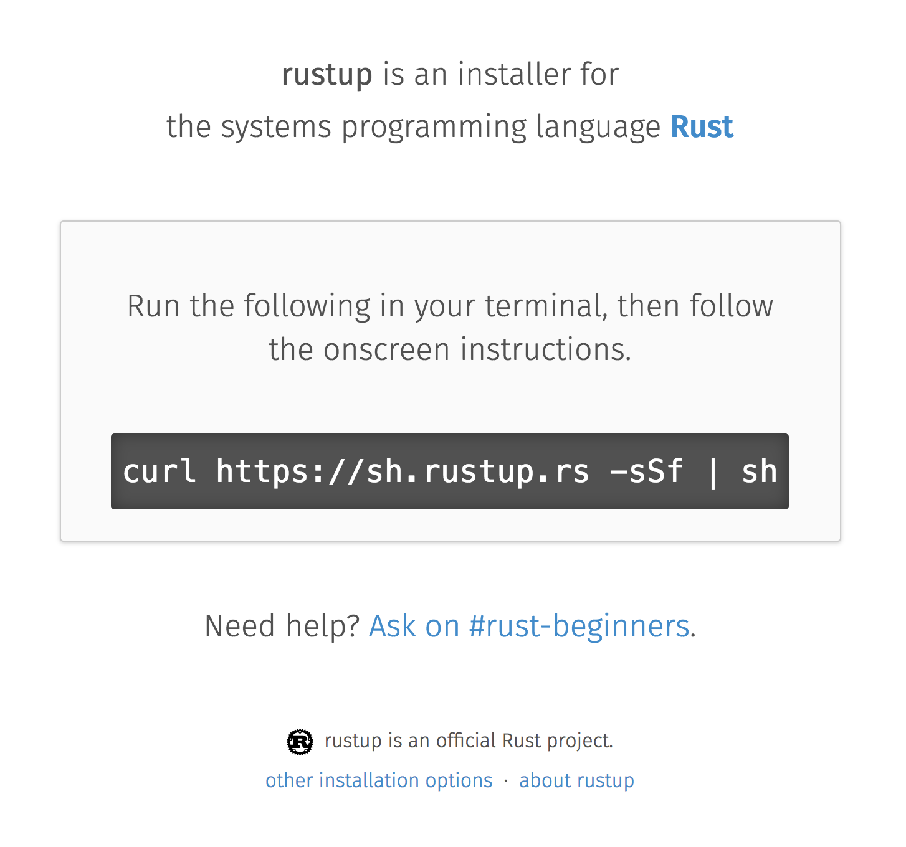
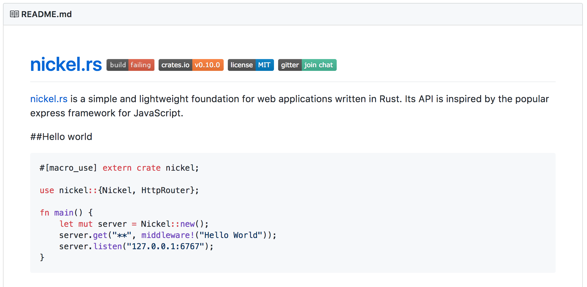
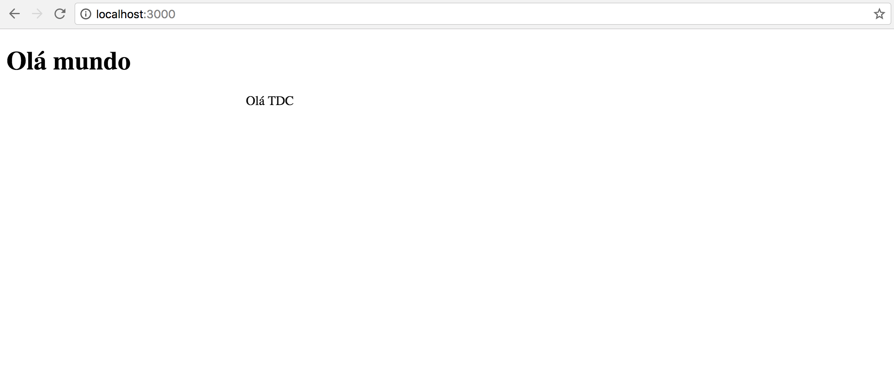
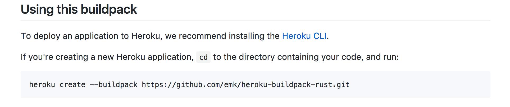
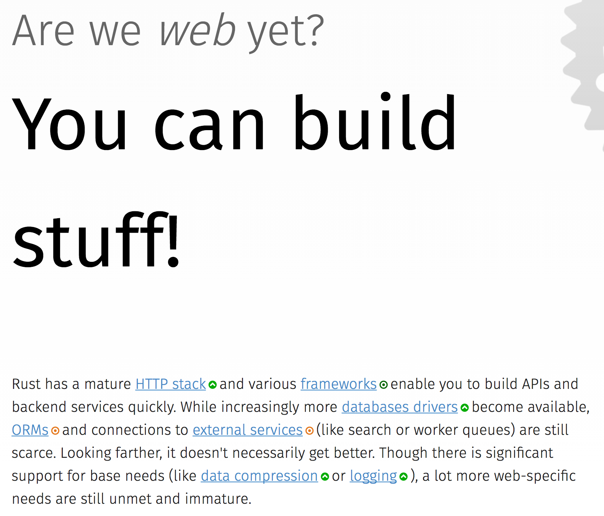
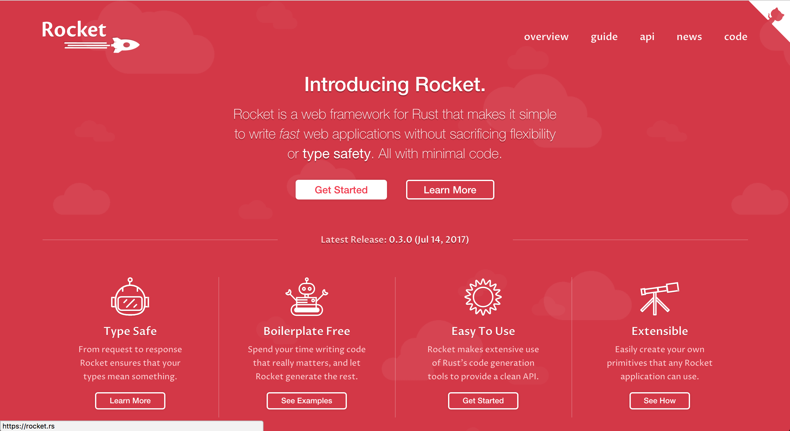
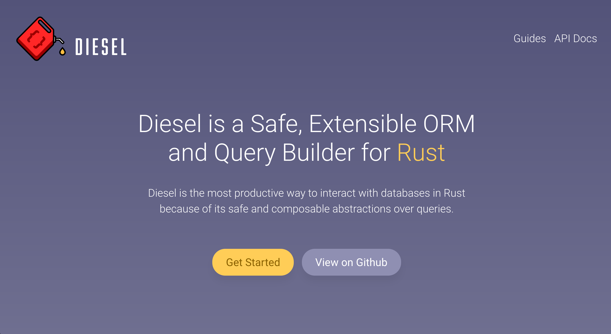

I've (Never) Heard of Rust…
But how do I make a website?
Hello everybody!
If you've never heard of Rust…
I'll tell you what Rust is
How I got to know Rust
And some problems that the language helped me to solve
But if you've already heard of it…
I'll show you some steps to keep learning
In 2015
I started to get involved with the deployment of some projects.
NPM + Python + Java + Closure Compiler + SCons + RVM…
I wanted a simple way to execute applications
Objective
1 single-file cross-platform binary
The Options
"Do I have to code in C to produce binaries?"
Rust was one of the options in my search for alternatives.
"But what is Rust?"
Rust
Rust is a systems programming language that runs blazingly fast, prevents segfaults, and guarantees thread safety.
TL;DR;
It's a very modern language
with low-level focus
A language with several functional-paradigm features:
- Immutable by default
- No null or undefined
- Pattern matching
- Closures
- Structs and Enums
What kept me interested on the language:
- Produces binary executables
- Cross-platform
- Good error messages
- Low-level focus
- But with a high-level language experience
- Sponsored by Mozilla
Mozilla Quantum
All of these traits create an ideal environment to proceed with confidence
"Why did they decide to create a low-level language?"
How many bugs may happen in a low-level program?
Rust has a type system that prevents several kinds of memory management errors at compile-time
Memory management without a Garbage Collector
An Example of Rust Preventing Problems with Only the Compiler
Let's see a little Rust
fn main() { let data = vec!(); println!("Data", data); }
error: argument never used
--> src/main.rs:3:22
|
3 | println!("Data", data);
| ^^^^
error: aborting due to previous error
fn main() { let data = vec!(); println!("Data {}", data); }
error[E0277]: the trait bound
`std::vec::Vec<_>: std::fmt::Display` is not satisfied
--> src/main.rs:3:25
|
|println!("Data {}", data);
| ^^^^
`std::vec::Vec<_>` cannot be formatted with the default
formatter; try using `:?` instead if you are using
a format string
|
= help: the trait `std::fmt::Display`
is not implemented for `std::vec::Vec<_>`
= note: required by `std::fmt::Display::fmt`
error: aborting due to previous error
^^^^ `std::vec::Vec<_>` cannot be formatted with the default formatter; try using `:?` instead if you are using a format string
fn main() { let data = vec!(); println!("Data {:?}", data); }
error[E0282]: type annotations needed --> src/main.rs:2:16 | 2 | let data = vec!(); | ---- ^^^^^^ cannot infer type for `T` | | | consider giving `data` a type | error: aborting due to previous error
error[E0282]: type annotations needed
$ rustc --explain E0282
fn main() { let data : Vec<char> = vec!(); println!("Data {:?}", data); }
Data []
Imagine a complex codebase
- Threaded code
- Parallel image processing
- Lots of coordinated I/O
In short, imagine how complex a browser is under the hood.
Are there any problems in this code?
use std::thread; use std::time::Duration; fn main() { let data = vec!(); thread::spawn(|| { data.push('a'); }); thread::spawn(|| { data.push('b'); }); thread::sleep(Duration::from_millis(50)); println!("Data {:?}", data); }
After several compilation feedback cycles:
- We won't have access to memory that's already freed
- We will have another form of avoiding race conditions
Our binary won't have these problems!
use std::thread; use std::sync::{Arc, Mutex}; use std::time::Duration; fn main() { let data = Arc::new(Mutex::new(vec!())); let writer = data.clone(); thread::spawn(move || { let lock_result = writer.lock(); match lock_result { Ok(mut locked_writer) => locked_writer.push('a'), Err(_) => panic!("Could not acquire lock a"), } }); let writer = data.clone(); thread::spawn(move || { let mut locked_writer = writer.lock().expect("Could not acquire lock b"); locked_writer.push('b'); }); thread::sleep(Duration::from_millis(50)); println!("Data {:?}", data); }
This type system brings new ways of expressing ownership
Which we can't express in other popular languages
#[derive(Debug)] struct Order { id: i32 } fn new_order() -> Order { Order { id: 1 } } fn send_order(order: Order) { // Code to send a order } fn main() { let order = new_order(); send_order(order); println!("Order data: {:?}", order); }
error[E0382]: use of moved value: `order`
--> src/main.rs:18:39
|
16 | send_order(order);
| ------- value moved here
17 |
18 | println!("Order data: {:?}", order);
| ^^^^^
value used here after move
We can only access the order data before we send it in this scenario.
And this is enforced by the compiler.
#[derive(Debug)] struct Order { id: i32 } fn new_order() -> Order { Order { id: 1 } } fn send_order(order: Order) { // Code to send a order } fn main() { let order = new_order(); println!("Order data: {:?}", order); send_order(order); }
Order data: Order { id: 1 }
Rust encourages testing from the beginning of a project
Types can't verify all logic
pub fn super_calculation(x: i32, y: i32) -> i32 { x + y } #[test] fn test_super_calculation() { assert_eq!(3, super_calculation(1, 2)); }
$ cargo test running 1 test test test_super_calculation ... ok test result: ok. 1 passed; 0 failed; 0 ignored; 0 measured; 0 filtered out
Documentation is seen as an important part of your project
Trying to avoid out-of-date examples
/// Runs a grand calculation that will leave you surprised /// # Examples /// /// ``` /// use my_lib::*; /// /// assert_eq!(5, surprise_calculation(1, 2)); /// ``` pub fn surprise_calculation(x: i32, y: i32, z: i32) -> i32 { x + y + z }
Examples in documentation are executed during testing
$ cargo test
[...]
running 1 test
test src/lib.rs - surprise_calculation (line 4) ... FAILED
failures:
---- src/lib.rs - surprise_calculation (line 4) stdout ----
error[E0061]: this function takes 3 parameters
but 2 parameters were supplied
--> src/lib.rs:5:32
|
5 | assert_eq!(5, surprise_calculation(1, 2));
| ^^^^
| expected 3 parameters
Generating project documentation is simple
$ cargo doc --open
A systems language:
- That has clear error messages
- That cares about documentation and tests
- And combines all these lessons from other languages
It's a great evolution for the whole low-level ecosystem
And a great option to construct high-level platforms
But you don't have to worry about all this now
These were examples of the potential of the language
You can learn bit by bit, at your own speed
And start with what you're already familiar with in other languages
Who's already heard of Rust?
Ah, and this is the mascot, Ferris

(And you can sew your own)
Now, how do I make a website?
Shall we make a website?
A website that's:
- Lightweight
- Easy to deploy
- Uses the advantages already presented here
Step one: Installing the toolchain
Follow the instructions on Rustup's website
This is the version manager for Rust
Which helps to install the needed dependencies and tooling
- Rustup will install the entire toolchain
- Supports Linux, Mac, and Windows
- It helps keep everything up-to-date
When we're done, we'll have:
- rustup: the toolchain installer
- cargo: the project/package manager
- rustc: the compiler
- rustdoc: the documentation generator
- rust-gdb and rust-lldb: debuggers
Creating our project
$ cargo new --bin my-site-in-rust
$ cargo run Compiling my-site-in-rust v0.1.0 Finished dev [unoptimized + debuginfo] target(s) in 1.54 secs Running `target/debug/my-site-in-rust` Hello, world!
Let's create our first page
Let's create a file at src/index.html with the following content
<!doctype html> <html> <head> <meta charset=utf-8> <title>Hello World</title> </head> <body> <h1>Hello, world</h1> <marquee>Hello everyone!</marquee> </body> </html>
Adding a web framework
Let's use the Nickel framework to help us

Add the dependency in the Cargo.toml file
[dependencies] nickel = "0.10.0"
Changing our file
Now let's see a little of Rust, bit by bit.
Let's open the src/main.rs file.
First, we import and include some references to the web framework.
#[macro_use] extern crate nickel; use nickel::{Nickel, HttpRouter};
We include all of our HTML file content in a constant.
const INDEX: &str = include_str!("index.html");
We create a new Nickel server.
let mut server = Nickel::new(); server.get("/", middleware!(INDEX));
We configure the port with the PORT environment variable.
Let's use port 3000 for fallback.
let port = std::env::var("PORT").unwrap_or("3000".into()); let url = format!("0.0.0.0:{port}", port = port);
We start our server, with a message in case there are errors.
println!("On {}", url); server.listen(url) .expect("Unable to start the server");
In the end we'll have this:
#[macro_use] extern crate nickel; use nickel::{Nickel, HttpRouter}; const INDEX: &str = include_str!("index.html"); fn main() { let mut server = Nickel::new(); server.get("/", middleware!(INDEX)); let port = std::env::var("PORT").unwrap_or("3000".into()); let url = format!("0.0.0.0:{port}", port = port); println!("On {}", url); server.listen(url) .expect("Unable to start the server"); }
Now we can create our executable
$ cargo build --release
And execute it:
$ ./target/release/my-site-in-rust
On 0.0.0.0:3000
Listening on http://0.0.0.0:3000
Ctrl-C to shutdown server
TA-DA!
Congratulations!
You have a site in Rust.

And it's all in just one sigle-file binary!
And there's a demo on Heroku!
"But can I do something else?"
Let's make a web call
It's as easy as in other languages, even though it's a systems language
I'm going to follow a recipe available on the Rust Cookbook
Creating another new project
$ cargo new --bin my-web-request-in-rust
$ cargo run Compiling my-web-request-in-rust v0.1.0 Finished dev [unoptimized + debuginfo] target(s) in 1.54 secs Running `target/debug/my-web-request-in-rust` Hello, world!
Adding a library for web requests
There are already several libraries available on Crates.io
Let's use Reqwest for this project
Add a dependency in the Cargo.toml file
[dependencies] reqwest = "0.8.0"
Changing our binary
Let's import our library and some I/O functions
extern crate reqwest; use std::io::Read;
And create our function
fn main() { let mut response = reqwest::get("https://httpbin.org/get") .expect("Could not connect"); println!("Response: {:?}", response); let mut content = String::new(); response.read_to_string(&mut content); println!("Site content: {}", content); }
TA-DA - Let's execute!
$ cargo run
Now you have code to make web requests!
- single-file binary
- cross-platform
- with low memory usage
- which doesn't need several dependencies installed to be used
Does it look far too diferent from other languages?
"One question…"
Is it easy to learn Rust?
I spent weeks banging my head against some concepts that were new to me.
- I come from a Ruby/Java/JavaScript background
- I had to learn about the stack and references
- The concepts of
lifetimesandborrowingtook a while to get into my head
Rust brought new concepts to my toolbox.
And I've been having a lot of fun!
The community is very open and helped me a lot, and has a lot of interest in welcoming new people.
Many people are willing to help on #rust-beginners, on #rust, and on the forum.
There's a big push to make the ecosystem inclusive, as much for community participation as for learning material for all programing levels.
RustBridge
An initiative to teach Rust to those that aren't well-represented in the area of technology
With interest in turning the language into a good first programming language
Collaborative evolution
All proposals for changes in the language follow an RFC process
Which requires new change proposals to have documentation and a clear way to teach the proposed change
How do I get my site on Heroku?
I used this buildpack.
Is there only Nickel for web work?
There are several frameworks, but it's an ecosystem in development.
A good list can be found at Are We Web Yet?
If you are looking for something more experimental:
Have a look at Rocket, which uses a more succinct syntax…
But it depends on compiler functionalities that are still in development.
Do I need to use rustup?
It's the most recommended method by the community
- It's the easiest way to stay up-to-date
- Rust has a new version every 6 weeks
- It's easier to follow new developments
Rust is also available through distro package managers, but it can take a while for updates to come.
How can I connect to a database?
Diesel can help with this.
Are there any companies already using Rust?
Yes. Your Firefox installation already has components written in Rust.
Some companies: Dropbox, Chef, Tilde, Sentry, CoreOS, Mozilla and there are more on the website list.
Can I only use Rust for web?
No, you can use it for many other things!
(If I tried to list all the examples, this would be another presentation entirely)
Two strong* spaces to apply the language:
- Support tools (CLI tools, build tools, ETLs, etc)
Language extensions (Gems, npm, python extensions, FFI)
*IMHO
Machine Learning, Ruby, Python, Haskell, Node.js, WebAssembly, Container, Network Platform, Embedded, Operational Systems123, Games, cross-compilation, CI…
I hope you liked Rust
And if you want to learn more
- There is a free book on the website [EN]
- #rust-beginners is a great channel to help with initial doubts
- There is #rust-br for the Portuguese speakers
- @rustlangbr on Telegram
- Meetups
- Coding exercises
- And an online studygroup in Portuguese
If you got interested in Rust, you may get in touch with me as well, I want to help you with your next steps into the ecosystem.
Bruno Tavares - @bltavares
Special thanks
Thank you for translating the original presentation from Portuguese to English
Links
- intorust(); screencasts
- Podcast da Lambda 3 - Em portugues
- https://github.com/bltavares/meu-site-em-rust
- Ferris pictures
- http://edunham.net/2016/04/11/plushie_rustacean_pattern.html
- https://rustup.rs/
- https://github.com/nickel-org/nickel.rs
- https://ouvi-falar-de-rust.herokuapp.com/
- https://riot.im/app/#/room/#mozilla_#rust-beginners:matrix.org
- https://users.rust-lang.org/
- https://riot.im/app/#/room/#mozilla_#rust-br:matrix.org
- https://github.com/emk/heroku-buildpack-rust
- http://www.arewewebyet.org/
- https://rocket.rs/
- https://diesel.rs/
- https://www.rust-lang.org/en-US/friends.html
- http://www.arewelearningyet.com/
- https://usehelix.com/
- https://github.com/mitsuhiko/snaek
- https://github.com/mgattozzi/curryrs
- https://www.neon-bindings.com/
- https://hackernoon.com/compiling-rust-to-webassembly-guide-411066a69fde
- https://blogs.oracle.com/developers/building-a-container-runtime-in-rust
- https://tokio.rs/
- https://github.com/rust-embedded